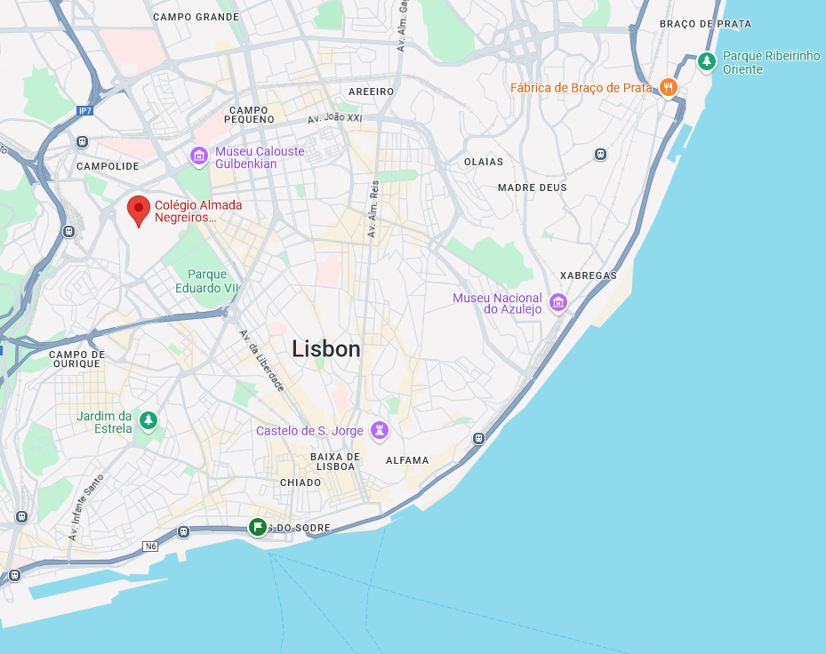
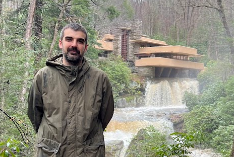

Welcome to my website! I am a tenured assistant professor of Political Science at NOVA FCSH, in Lisbon, Portugal.

My main research interests are related to comparative political behaviour, but I have worked and published on other topics such as political institutions, civil society, and elites' attitudes. I tend to take a pragmatic, problem-solving approach to the study of politics, and therefore use different methods to address different questions. I have conducted research using quantitative techniques (spatial regression, cluster analysis, survey experiments or social network analysis) and qualitative methods (archival research and focus groups).
In the Spring 2024 semester I was the FLAD visiting professor at the Department of Government of Georgetown University, in Washington DC. Previously I worked as an adjunct instructor at the School of Economics and Management of the University of Minho (2017-2019) and as a policy officer at the High Commission for Migration (ACM, I.P.) (2012-2013). I was a Visiting PhD student at the Centre for the Study of Political Change (CIRCaP) in Siena, Italy in 2014-2015.
In this website you can find a copy of my CV, links to my publications, and some course materials. You can also check my profiles at Google Scholar and ORCID.

Feel free to email me at joaocancela@fcsh.unl.pt.